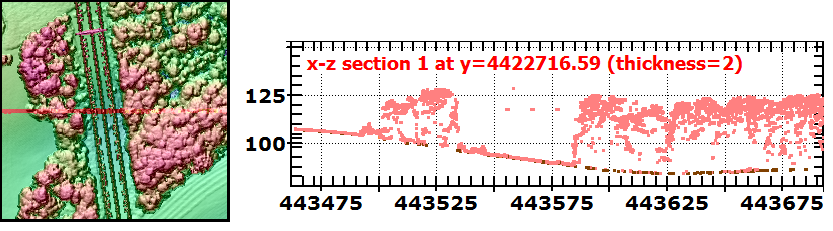

|
 |
DSM on the left: trees obvious from the rough texture, and a power
line from the linear cables and crossbars on the towers. Slice through the point cloud on the right. Most of the returns are from the top of the foliage (this is summer, leaf on, but there is enough penetration that some last returns reach the ground. At about the middle of the slice, there are four isolated returns from the four cables in the power lines, one of which is significantly higher than the other three. |
Last revision 11/8/2015